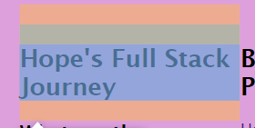

Hope's Full Stack Journey
All things Javascript, Html & CSS
So you want to learn more about Javascript, HTML & CSS but it is too daunting, and where do you even start. Last week I was you, timid but excited to learn more about this golden trio - holy trinity - the three musketeers; lol I should stop there, actually one more the three blind mice, I’m done I promise.
Picture going to eat a meal at a Michelin starred restaurant, there are so many elements that go into the final creation of the dish. To create a beautiful, tasty and provocative meal you need to get a few things right first:
The ingredients - I like to think of these as the HTML - the foundation of the meal, the ingredients shape the meal from start to finish and they dictate what will make the meal complete. In developer words, HTML acts as the foundation, providing the structure and content of your web page. It defines the basic layout, text, images, and other essential elements.
Then consider the overarching concept of the meal, will there be smoke - what kind of elements will make the meal more interactive and captivating, maybe a surprise inside a chocolate, or a flavour you weren’t looking for - this is the Javascript - it makes things responsive and animated. JavaScript allows you to automate tasks, create dynamic functionality, and interact with your visitors - it brings life to your web page, enabling you to build interactive forms, validate user input and so so much more.
And finally the design and plating aka the CSS - this is what you see first when your meal arrives, you look at its colours and the presentation. Again, in developer words CSS is responsible for the aesthetics and visual appeal of your web page. It determines the colours, fonts, positioning, and overall styling drawing you into the page.
All of these elements, you know - the holy trinity - come together to make one responsive and cohesive website or app, or whatever you would like to develop.
-------------
Control Flow and Loops
Control flow refers to the order in which instructions are executed in a program. It determines the path your code takes based on conditions and loops. To explain control flow, let's use the example of a skincare regime.
This is going to sound strange, I’m sure - but consider skincare. There are steps that must be taken to ensure the best results in the long term. You can’t use serums and toners prior to cleansing and moisturising - ok really bare with me haha. Essentially, there is a set of instructions to follow, in skincare this is, cleanser, toner, serums, moisturiser, eye cream, and then sunscreen - man how hard is it to keep acne away! Where I am getting at is each step is executed sequentially, one after the other, until the face is primed and ready for the next step, most likely make-up. This sequential execution represents the control flow in programming.
Now, loops. Loops allow us to repeat a set of instructions multiple times. To better understand loops, let's imagine you're organising a children's party and need to send out invites.
Rather than sending invitations across town, via text or on facebook, some in person - you get it, confusing and time consuming. Instead you can save yourself time, chaos and probably a little money and invite everyone via a facebook event the information is the same and it is repeated to everyone who is invited - one easy to track place without all of the text RSVPS or lost invitations. This repetition of adding friends to the invitation list represents a loop, you can use a loop to simplify the process. Loops help to repeat instructions clearly multiple times if needed.

The margin is transparent, it wraps around the padding, border and content creating space which surrounds the box.
Border
This surrounds the padding and content, borders can vary. They can be solid and thick or invisible.
Padding
This is the space closest to the content, it sits between the content and the border of the 'box'.
Looking at the box above it clearly illustrates the differences between these elements. Padding defines the amount of whitespace there should be within the box. Margins define the amount of whitespace that should exist outside of the box.

Webflow.com adds, padding can be set to zero pixels and above while margins can be set to auto or even have negative values.
There are many other qualities and intricacies between these elements, they can overlap, do this, do that, and probably some other magic we haven't realised yet!
I have used the box model to define spaces on my blog, to make it fix more seamlessly together and create a clear design.

This code asks for padding on the h2 & p elements. h2 has allocated padding of 20px, creating space from the top of the page to define the heading.
This image shows the breakdown of the box, the green box shows us how much padding is allocated and how it will look if the code is kept.

This final image shows the results of the h2 code for the padding on the finished html page.
Ngā Mihi koutou!